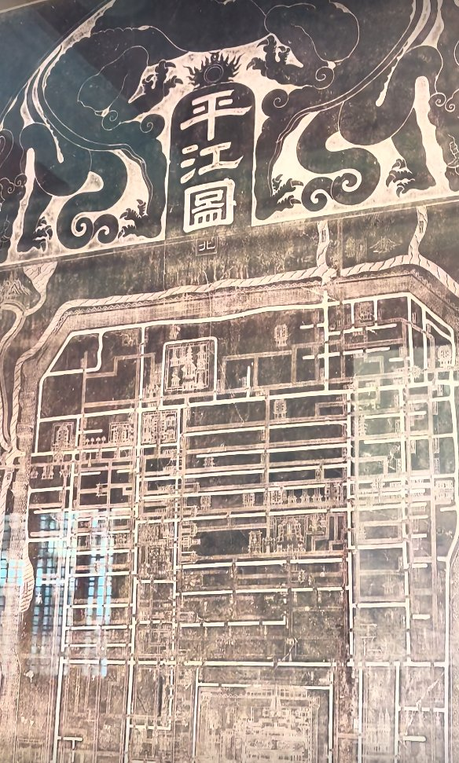
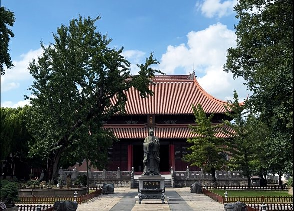
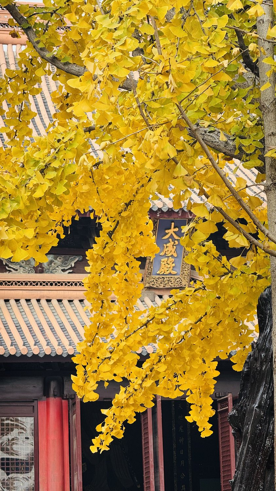
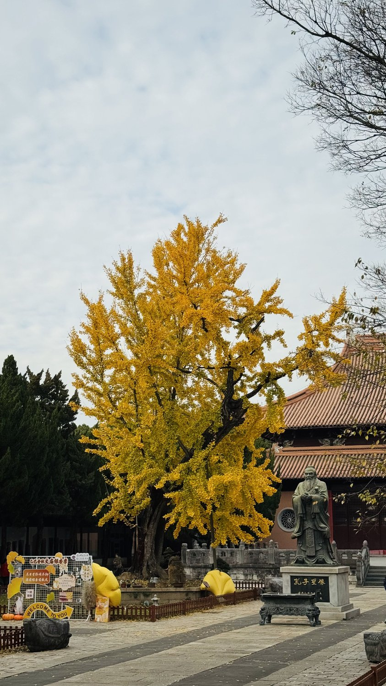
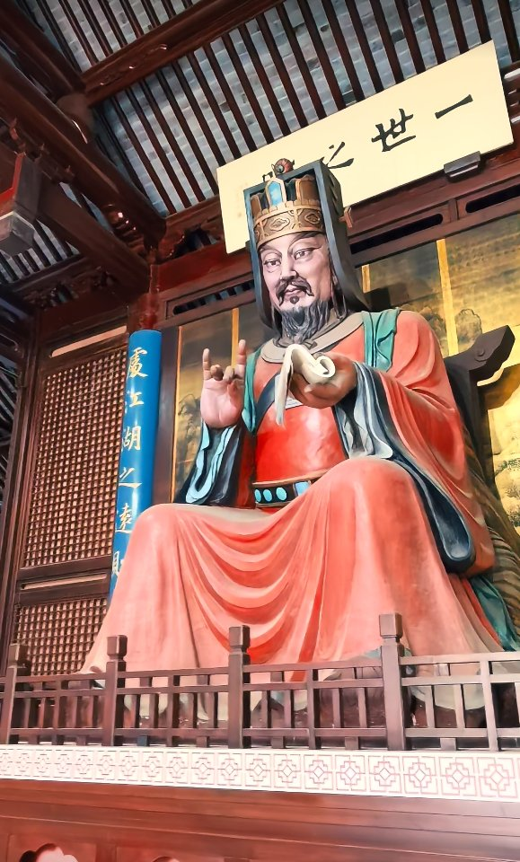
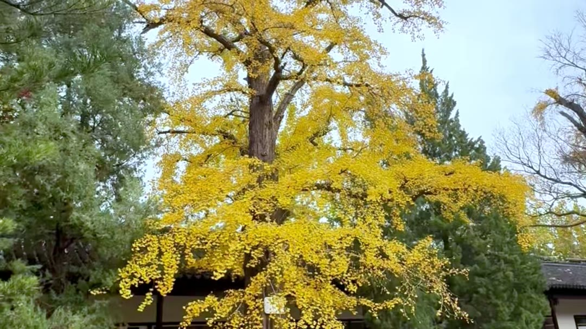

🌿 关于「千里」——这套长者研学线路的名字
曹操《龟虽寿》有名句：「老骥伏枥，志在千里；烈士暮年，壮心不已。」——年长的骏马虽伏在马槽边，胸中仍装着千里的远方。
这套线路专为长者而设，取名「千里」，正是取这份心意：脚步可以放慢，眼光仍要放远。愿每一位同行的老友，都在熟悉的街巷里走出新的天地——看一回苏州，便多一分「志在千里」的少年心气。
所以本页里的每一张小任务，都叫「千里任务卡」：不为考记忆，只为给您一个由头——边走、边看、边聊。
苏州文庙 · 千里同行集合！
主题：府学文脉 · 范仲淹创办苏州府学，一起读懂宋代碑刻与千年文庙。全程步行，半日可游。
宋代四大宋碑 · 重点研读《平江图》
🏷️ 镇馆之宝🏷️ 中国最早城市地图
苏州文庙保存国内罕见的宋代四大碑刻：平江图、天文图、地理图、帝王绍运图。其中《平江图》刻于南宋，是中国现存最完整的古代城市石刻地图，完整还原宋代苏州古城的河道、街巷、桥梁、官署、寺庙布局。
楠木大成殿
🏷️ 庙学合一
大成殿为文庙主体建筑，供奉孔子，保留珍贵楠木构件，体量宏大。苏州府学开"庙学合一"之先河——祭祀圣贤与地方教育合二为一，是江南府学的典范。
四大古银杏
🏷️ 文脉活见证

文庙院内古银杏树龄数百年，是文庙活着的历史见证。秋冬之际满树金黄，红墙金叶，氛围极浓。
府学奠基人 · 范仲淹
🏷️ 先忧后乐
北宋景祐二年（1035），范仲淹知苏州，舍宅建学，创办苏州府学，是全国最早的地方官办学校之一。此后苏州文教兴盛、状元辈出，源头便在这座府学文庙。
封子老师讲文庙 · 大成殿前的五棵古银杏

850岁的寿杏、650岁的福杏、雷击后又复活的三元杏、怀抱朴树的连理杏、默默站在角落的灵杏——大成殿前五棵古银杏，每棵都有一段传奇。
本线路全程位于苏州文庙，适合半日慢游：优先看四大宋碑，再参观大成殿、拜范仲淹像；春秋两季银杏季景致最佳，记得带相机！
文庙名人堂 · 和文庙有关的名人
一座文庙，半部苏州读书史。这六位（组）名人，都能在文庙里找到他们的"踪迹"——进馆记得对照找一找！
孔子 · 万世师表
🏷️ 大成殿供奉🏷️ 有教无类大成殿正中供奉的就是孔子。殿名"大成"出自孟子对他的赞誉——"集大成者"。孔子一生弟子三千、贤人七十二，提出"有教无类"：无论出身贵贱，人人都有受教育的权利——这在两千五百年前是了不起的观念。全国各地的文庙，都是为纪念他而建。
范仲淹 · 先忧后乐
🏷️ 舍宅建学🏷️ 一世之师北宋景祐二年（1035），范仲淹任苏州知州，把自家宅地捐出来创办苏州府学，又设"义庄"资助贫困子弟读书。他写下"先天下之忧而忧，后天下之乐而乐"。自府学而始，苏州文教大兴，明清两代状元人数居全国之冠。
言偃（言子）· 文开吴会
🏷️ 孔子七十二贤🏷️ 唯一南方人言偃，字子游，吴地常熟人，是孔子七十二贤弟子中唯一的南方人，以"文学"著称。孔子赞叹："吾门有偃，吾道其南"——儒家学问传到江南，正是从言偃开始。他学成后回到南方传播礼乐，后世尊称"南方夫子"。苏州城里原有言子祠，常熟虞山至今存言子墓。
钱棨 · 连中六元的苏州传奇
🏷️ 历史唯一🏷️ 三元杏之谜清代苏州人钱棨，从县试、府试、院试，到乡试、会试、殿试，六场考试场场第一——"连中六元"，中国科举史上唯一一人！乾隆皇帝特赋诗表彰。传说文庙大成殿前那棵遭雷击又复活的三元杏，正是他传奇的见证。
钱镠 · 保境安民的吴越王
🏷️ 钱塘人🏷️ 钱氏先祖顺着钱棨往上追，钱氏家族的"老祖宗"是五代十国的吴越国王钱镠，杭州钱塘人。他修海塘、治西湖、兴农桑，"保境安民"让江浙在乱世中安然富足，为江南千年繁荣打下根基——"上有天堂，下有苏杭"的底子，有他一份大功劳。
钱氏家族 · 群星闪耀
🏷️ 一部家训传千年🏷️ 苏州中学的校友一部《钱氏家训》，让钱家人才代代辈出：科学界"三钱"——钱学森（中国航天之父）、钱三强（中国原子弹之父）、钱伟长（中国近代力学之父）；还有国学大师钱穆、大学者钱钟书……别忘了：钱穆、钱伟长叔侄都曾执教、就读于咱们的打卡点——苏州中学（府学文庙旧址旁）！
报名须知
可个人报名，也欢迎老友结伴同行；如需家人陪同参加，请提前报备确认。
每团上限 30 人，报满即截止。
本线路为长者研学设计，适合 55 岁以上、行动自如的活力长者参加。
全程设有 多个有奖竞猜答题关卡，更有彩蛋大奖等着你来夺取！
带队讲师

封子老师
姑苏区老年大学特聘文史讲师 · 苏州本土文旅内容创作者
教师风采，请点这里 →